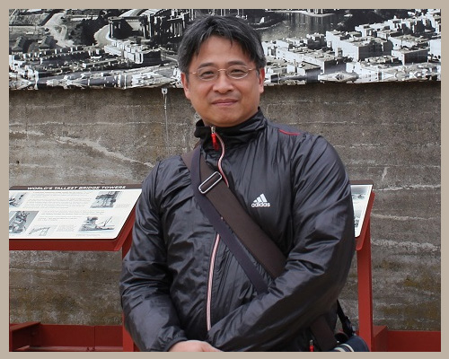

Shun-DerRyan Chen
天主教輔仁大學
圖書資訊學系
陳舜德副教授
專業服務
- 陳舜德，九十九學年度校圖書委員會，當然委員，2010-08-01~2011-07-31
- 陳舜德，九十九學年度校課程委員會代表(進修部代表)，校課委代表(進修部代表)，2010-08-01~2011-07-31
- 陳舜德，九十九學年度圖書資訊系系導師會議，委員，2010-08-01~2011-07-31
- 陳舜德，九十九學年度圖書資訊系(系務、課委會、系教評、系招生、預算)會議，會議主席，2010-08-01~2011-07-31
- 陳舜德，九十九學年度進修部(部務、部教評、部課委)會議委員，委員，2010-08-01~2011-07-31
- 陳舜德，輔仁大學九十九學年度校務會議代表，校務會議代表，2010-08-01~2011-07-31
- 陳舜德，輔仁大學碩士班邰文暉口試委員，口試委員，2010-07-01~2010-07-01
- 陳舜德，文化大學資管所碩士班黃珮茹口試委員，口試委員，2010-06-23~2010-06-23
- 陳舜德，文化大學資管所碩士班王耀達口試委員，口試委員，2010-06-23~2010-06-23
- 陳舜德，九十九學年度圖書資訊系(日間學士班、進修學士班)轉學生入學考試命題，命題委員，2010-06-15~2010-06-30
- 陳舜德，本校第二屆圖資學群程式設計競賽命題，命題委員，2010-05-01~2010-05-25
- 陳舜德，圖書資訊系進修學士班九十九學年度申請入學考試，甄試委員，2010-04-24~2010-04-24
- 陳舜德，圖書資訊系日間學士班九十九學年度大學推薦甄試入學考試，甄試委員，2010-04-08~2010-04-08
- 陳舜德，輔仁大學 2010圖書館與資訊社會研討會審稿委員，審稿委員，2010-03-16~2010-04-15
- 陳舜德，圖書資訊系碩士班九十九學年度入學考試命題，命題委員，2010-03-01~2010-03-15
- 陳舜德，中華民國圖書館學會第51屆教育圖書館委員會委員，委員，2010-02-08~2011-12-31
- 陳舜德，中華民國圖書館學會第五十一屆「教育委員會」委員，委員，2010-01-21~2011-01-21
- 陳舜德，圖書資訊系碩士班九十九學年度甄試入學考試，甄試委員，2009-12-16~2009-12-16
- 陳舜德，國立宜蘭大學人文及管理學院學報審查人，審稿，2009-10-29~2009-11-12
- 陳舜德，<圖書資訊學研究>學刊 審稿，審稿，2009-09-26~2009-10-15
- 陳舜德，"圖書資訊學研究"學刊，審稿委員，2009-09-21~2009-10-21
- 陳舜德，臺北市仁愛國小外訂盒餐財物採購評選委員，評選委員，2009-08-17~2009-08-18
- 陳舜德，九十八學年度校圖書館委員會，當然委員，2009-08-01~2010-07-31
- 陳舜德，九十八學年度圖書資訊系系導師會議，委員，2009-08-01~2010-07-31
- 陳舜德，九十八學年度進修部(部務、部教評、部課委)會議委員，委員，2009-08-01~2010-07-31
- 陳舜德，圖書館圖書委員會，當然委員，2009-08-01~2010-07-31
- 陳舜德，文史哲學群委員，委員，2009-08-01~2010-07-31
- 陳舜德，九十八學年度圖書資訊系(系務、課委會、系教評、系招生、預算)會議，會議主席，2009-08-01~2010-07-31
- 陳舜德，輔仁大學九十八學年度校務會議代表，校務會議代表，2009-08-01~2010-07-31
- 陳舜德，銘傳大學升等著作審查，升等著作審查，2009-06-16~2009-06-30
- 陳舜德，圖書資訊系九十八學年度轉學生入學考試命題，命題委員，2009-06-16~2009-06-30
- 陳舜德，華威行銷研究股份有限公司{台中市立圖書總館的空間規劃案}，諮詢顧問，2009-05-07~2009-06-30
- 陳舜德，輔仁大學 2009 圖書館與資訊社會研討會審稿委員，審稿委員，2009-03-05~2009-04-08
- 陳舜德，九十八學年度圖書資訊系碩士班(推薦甄試、入學考試)命題委員，甄試、命題委員，2008-12-17~2008-12-17
- 陳舜德，教育資料與圖書館學季刊審稿，審稿，2008-11-25~2008-12-20
- 陳舜德，International Journal of Computation Linguistic and Chinese Language Processing審稿委員，審稿委員，2008-10-21~2009-01-15
- 陳舜德，輔仁大學圖書資訊所碩士班鄭曉菁口試委員，口試委員，2008-08-20~2008-08-20
- 陳舜德，九十七學年度圖書資訊系(系務、課委會、系教評、系招生、預算)會議，委員，2008-08-01~2009-07-31
- 陳舜德，輔仁大學圖資系，服務學習課程，2008-08-01~2008-12-31
- 陳舜德，輔仁大學九十七學年度校務會議代表，校務會議代表，2008-08-01~2009-07-31
- 陳舜德，2008年輔仁大學圖資系"由圖書館學到圖書資訊學－跨越兩個世紀"研討會審稿委員，審稿委員，2008-03-22~2008-04-16
- 陳舜德，圖書資訊系碩士班九十七學年度入學考試命題，命題委員，2008-03-01~2008-03-18
- 陳舜德，輔仁大學學生獎懲委員會委員，學生獎懲委員會委員，2007-08-01~2008-07-31
- 陳舜德，輔仁大學圖資所碩士班任炳魁口試委員，口試委員，2007-07-31~2007-07-31
- 陳舜德，輔仁大學圖資所碩士班黃嘉宏口試委員，口試委員，2007-07-31~2007-07-31
- 陳舜德，九十七學年度圖書資訊系碩士班(推薦甄試、入學考試)命題委員，甄試委員與命題委員，2006-12-20~2006-12-20
- 陳舜德，東吳大學資訊科學研究所碩士班葉睿哲口試委員，口試委員，2006-07-27~2006-07-27
- 陳舜德，輔仁大學圖資所碩士班謝順宏口試委員，口試委員，2006-02-14~2006-02-14
- 陳舜德，九十六學年度圖書資訊系碩士班(推薦甄試、入學考試)命題委員，甄試、命題委員，2005-12-22~2005-12-22
- 陳舜德，輔仁大學教師申評會委員(任期2年)，申評會委員，2005-08-01~2007-07-31
- 陳舜德，輔仁大學九十四學年度校務會議代表，校務會議代表，2005-08-01~2006-07-31
- 陳舜德，第二屆台北市網界博覽會決賽評審，評審委員，2005-02-15~2005-02-28
- 陳舜德，2004古籍學術研討會，評論人，2004-05-17~2004-05-17